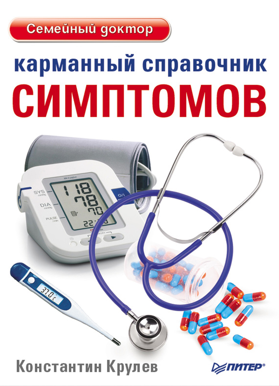
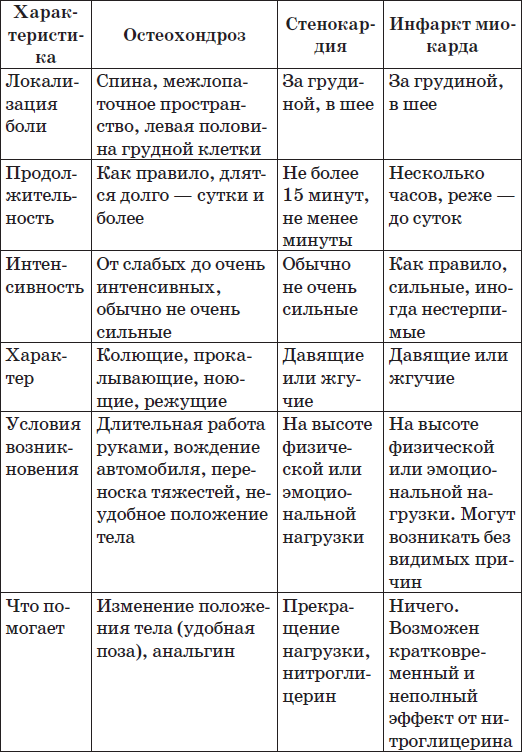
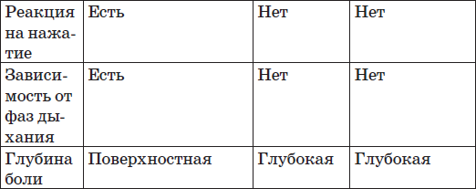

В переводе с латинского языка термин «стенокардия» означает сдавление сердца. Действительно, наиболее часто встречающимся симптомом стенокардии является сжимающая боль за грудиной или в области сердца. Обычно больные используют такие слова для того, чтобы описать это ощущение — чувство тяжести, сжатие, «зажало, как в тиски».
Типичным условием возникновения приступа стенокардии является быстрая ходьба, особенно при встречном холодном ветре, бег, подъем по лестнице. Прием пищи и курение тоже могут иногда вызывать приступы стенокардии.
Неблагоприятным временем для больных являются ранние утренние часы. Довольно часто приходится слышать: «Утром мне достаточно пройти несколько шагов, и тут же возникает приступ. Приму таблетку-другую нитроглицерина, боли проходят. Через несколько минут снова приступ, и так каждое утро. А к середине дня все проходит, хоть танцуй».
Эмоциональная нагрузка — второй не менее важный фактор, способствующий возникновению приступа. Шотландский врач Д. Хантер, диагностировав у себя стенокардию, мрачно заметил: «Теперь моя жизнь в руках любого проходимца, которому вздумается меня разозлить». Впоследствии он умер во время сильного приступа гнева.
Поставить диагноз стенокардии обычно не является очень сложной задачей для врача. Для этого, как правило, достаточно задать лишь несколько вопросов:
1. Бывают ли у вас неприятные ощущения в грудной клетке?
2. Появляются ли эти ощущения при быстрой ходьбе или подъеме по лестнице?
3. Проходят ли эти ощущения при прекращении нагрузки?
4. Проходят ли они менее чем за 10 минут?
5. Располагаются ли эти ощущения за грудиной?
Положительные ответы на эти вопросы позволяют со значительной вероятностью диагностировать стенокардию.
Откуда же берутся эти ощущения? Почему возникает боль? Чтобы понять, надо вспомнить то, о чем я говорил в главе об атеросклерозе. При стенокардии один или несколько сосудов сужены атеросклеротическими бляшками. В покое кровоток по сосудам достаточный, чтобы обеспечить потребности мышцы. Как только нагрузка на сердце возрастает, участок сердца, снабжаемый пораженным сосудом, испытывает нехватку кислорода и сигнализирует: «Остановись! Отдохни! Мне больно!»
Действительно, кратковременный отдых обычно очень эффективно помогает снять приступ. Можно использовать также нитроглицерин (но не валидол!). Нитроглицерин расширяет вены, уменьшая приток крови к сердцу, что быстро снимает боль.
Итак, стенокардия проявляется болью в грудной клетке. Но это далеко не единственная причина болей такой локализации. Болью в груди может проявляться и хорошо знакомый всем остеохондроз. И такое грозное заболевание, как инфаркт миокарда, тоже обычно проявляется болью в груди. Пациенту не всегда бывает легко разобраться, что является причиной боли. Облегчить эту задачу поможет таблица.


Перечислим теперь боли, которые с высокой вероятностью НЕ являются проявлением стенокардии (из книги «Клиническая кардиология» под ред. Р. К. Шлант, Р. В. Александер). Это словно укол иголкой, колющие, вонзающие, как удар ножом, жалящие, стреляющие, пронизывающие, дергающие, зудящие, пощипывающие, прокалывающие, режущие, леденящие.
Стабильная стенокардия, описанная в этой главе, — заболевание, которое протекает более или менее ровно. Условия возникновения и частота приступов относительно постоянны. Летом может отмечаться некоторое улучшение самочувствия, а зимой, особенно в сильные морозы, частота приступов возрастает.
Больные обычно приспосабливаются к своему заболеванию и продолжают работать и вести относительно активный образ жизни, принимая небольшое количество лекарств. Частое обращение к врачу, как правило, не требуется, вызов врача необходим лишь при дестабилизации процесса, о чем пойдет речь в следующей главе.
В заключение остановимся на лечении приступа стенокардии:
1. При возникновении приступа загрудинных болей необходимо немедленно прекратить нагрузку. Сесть или принять полулежачее положение. Если приступ возник в положении лежа, надо сесть с опущенными ногами, что вызовет отток крови к ним и уменьшит нагрузку на сердце.
2. Обеспечить доступ свежего воздуха (открыть окно, расстегнуть воротник).
3. Принять одну таблетку нитроглицерина или любого нитроспрея (нитроминт и др.) под язык. Нитроспрей не вдыхать! Прием можно повторять через 1–5 минут (кратность и интервал индивидуальны).
4. Принять успокоительное, например 30–40 капель корвалола.
5. Измерить артериальное давление, если оно повышено, принять меры по его снижению.
6. Если боль не проходит, вызвать скорую помощь. До прибытия врача разжевать таблетки аспирина (даже если в этот день вы его уже принимали).
Резюме
• Проявление стабильной стенокардии — сжимающие или жгучие боли за грудиной, возникающие на высоте физической или эмоциональной нагрузки и проходящие в покое и при приеме нитроглицерина.
• Причина стабильной стенокардии — неповрежденная атеросклеротическая бляшка, уменьшающая просвет одной или нескольких коронарных артерий.
•Условия возникновения приступов обычно стереотипные.
• Лечение приступа стенокардии — покой и подъязычные формы нитратов.
• Обращение к врачу показано при дестабилизации течения заболевания.